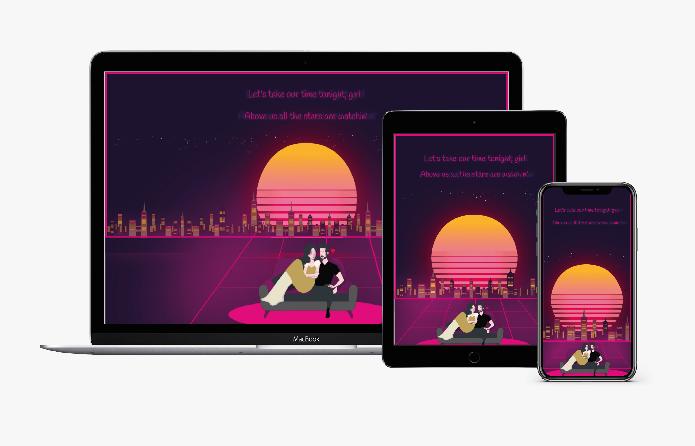
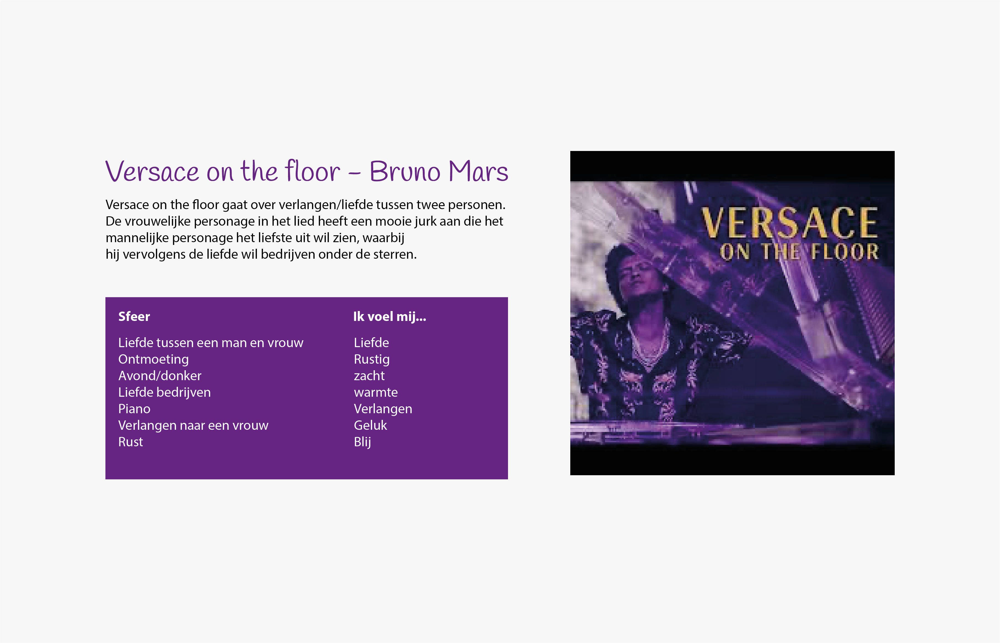
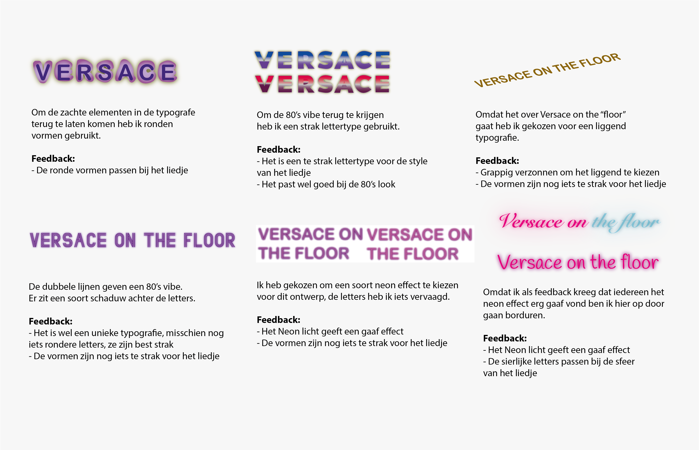
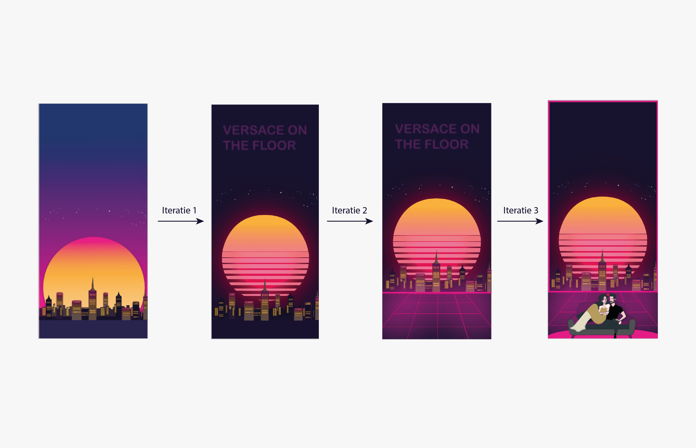

- Hogeschool van Amsterdam
- 2020
- Individueel
Songtekst vormgeven
Voor vormgeving kreeg ik de opdracht om een songtekst te ontwerpen voor een Multi-device Design, waarbij het 'visuele gedeelte' erg belangrijk. Van beeldonderzoek tot tone-of-voice.
Concept
Ontwerp een songtekst die past bij de sfeer van de songtekst voor het mobiele device. Als songtekst heb ik gekozen voor het liedje "Versace on the floor" van Bruno Mars.
Typografie
Na beeldonderzoek te hebben gedaan, heb ik digitale schetsen gemaakt van typgrafische elementen die passen bij mijn beeldsfeer.
Iteratie achtergrond mobiele device
Tijdens het proces heb ik verschillende iteraties gedaan om mijn ontwerp nog sterker te maken. Ten tweede heb ik een animatie gemaakt van de songtekst in de gehele context.
Bekijk de animatie van de songtekst
Bekijk de animatie 